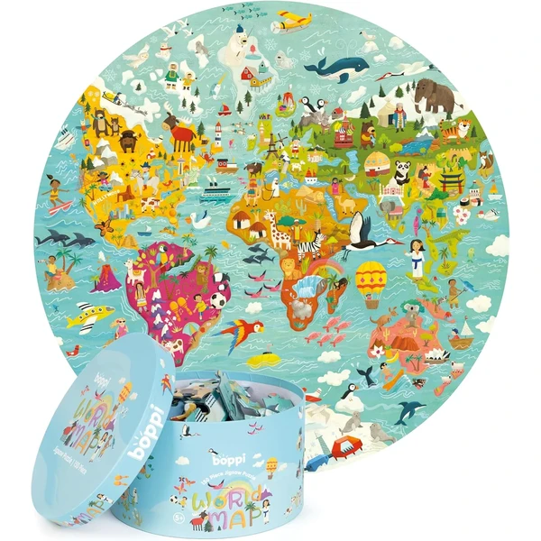
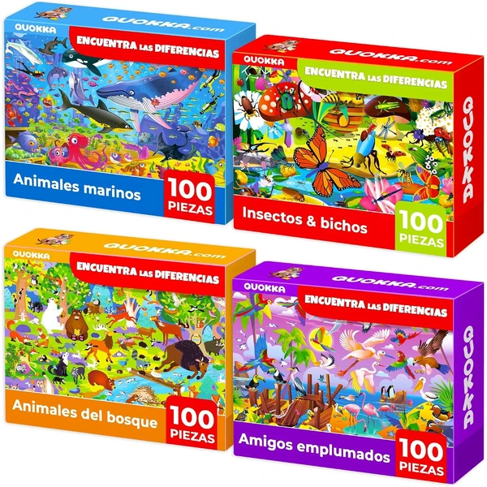
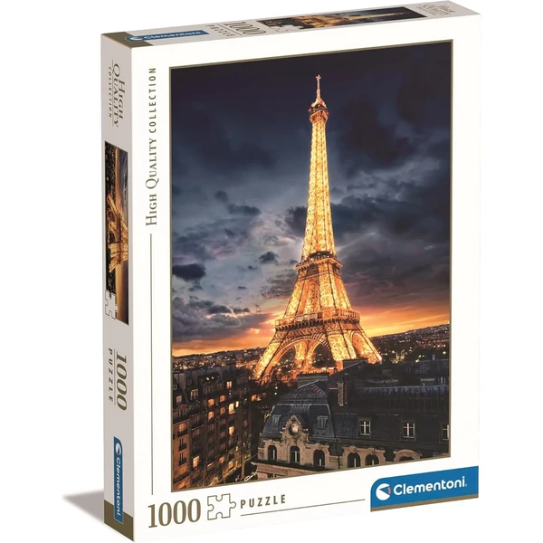
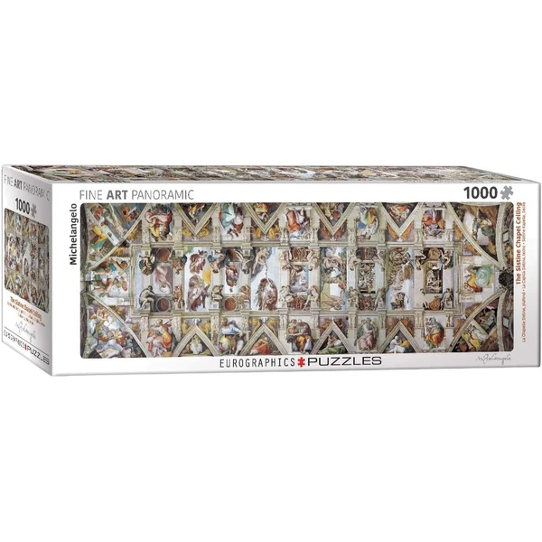
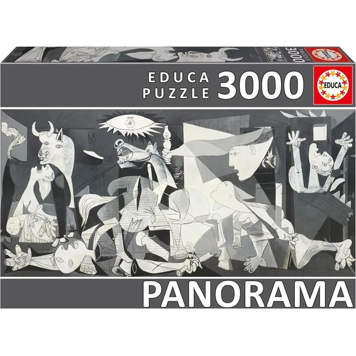
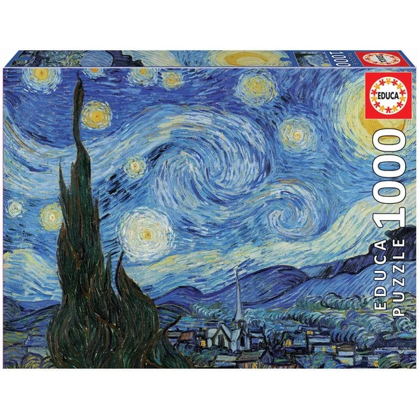

✨ Guía especial
Montar un mapamundi pieza a pieza es una de las formas más entretenidas de que los niños memoricen países, capitales y continentes casi sin darse cuenta. Lo mismo ocurre con los monumentos más famosos del mundo o con las grandes obras de arte: convertidos en puzzle, se transforman en una actividad para hacer en familia con un componente educativo real, mucho más allá de "quedar bien" en la pared.
El clásico mapamundi ilustrado es uno de los recursos más usados para reforzar geografía en casa: cada pieza suele representar un país o una región, con dibujos o banderas que ayudan a fijar la ubicación de forma visual.
Mapa ilustrado con países, capitales o banderas, pensado como recurso de aprendizaje además de puzzle.

Boppi Ver en Amazon →Bosques, montañas, cascadas o fondos marinos son una forma estupenda de acercar a los niños a distintos ecosistemas del planeta, y suelen combinarse bien con conversaciones sobre animales y clima mientras se monta el puzzle.
Paisaje natural con alto nivel de detalle, ideal para trabajar la paciencia además de la curiosidad por el entorno.

Quokka Ver en Amazon →Los monumentos más icónicos del mundo son también una buena excusa para hablar de historia y cultura con los más pequeños: la Torre Eiffel como símbolo de París y de la ingeniería del siglo XIX, o la Capilla Sixtina como ejemplo de arte religioso renacentista, son dos de los más buscados en formato puzzle familiar.
Ilustración detallada de uno de los monumentos más reconocibles del mundo, con buen nivel de dificultad para toda la familia.

Torre Eiffel Ver en Amazon →
C. Sixtina Ver en Amazon →Convertir un cuadro famoso en puzzle es una manera muy visual de acercar a los niños al arte antes incluso de que lo estudien en el colegio. El Guernica de Picasso, pintado en 1937 como denuncia de los bombardeos de la Guerra Civil española, y La noche estrellada de Van Gogh, uno de los cuadros más reconocibles del post-impresionismo, son dos de las obras más buscadas en este formato: montarlas pieza a pieza ayuda a fijarse en detalles que pasan desapercibidos a simple vista.
Reproducción de una obra de arte reconocida en formato puzzle, con calidad de impresión fiel al original.

Guernica Ver en Amazon →
Estrellada Ver en Amazon →Si buscas más ideas para aprender jugando, no te pierdas también nuestra guía de puzzles educativos.